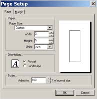

Click on File and select Page setup. The following dialog box will show.

In the above dialog box, all settings affect the size of your paper to one degree or another.
The drop-down box represents pre-set templates that are set to correspong with envelopes and other pre-cut stationary. If none of these templates match with the specifications for your choosen sized paper, then choose the setting designated as "Custom." Then proceed to the width and height boxes. Manually enter your disired paper size. The "Units" box designates the unit of measurement used to measure the paper, e.g. inches, centimeters, etc.
The "scaling" box allows you to change the document size in a matter of percentages. This typically won't need to be used if you know your deisred paper size by measurement.